Agile Project Dashboard
Kick-off meeting 23.02.2017
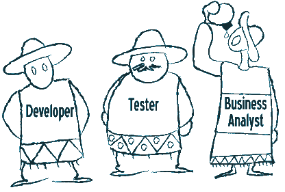
The silo problem
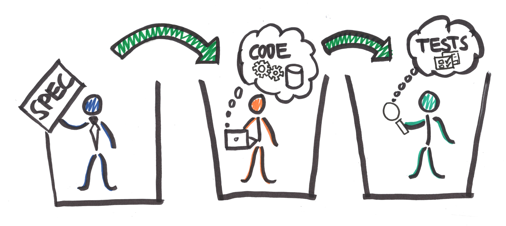
The document hell
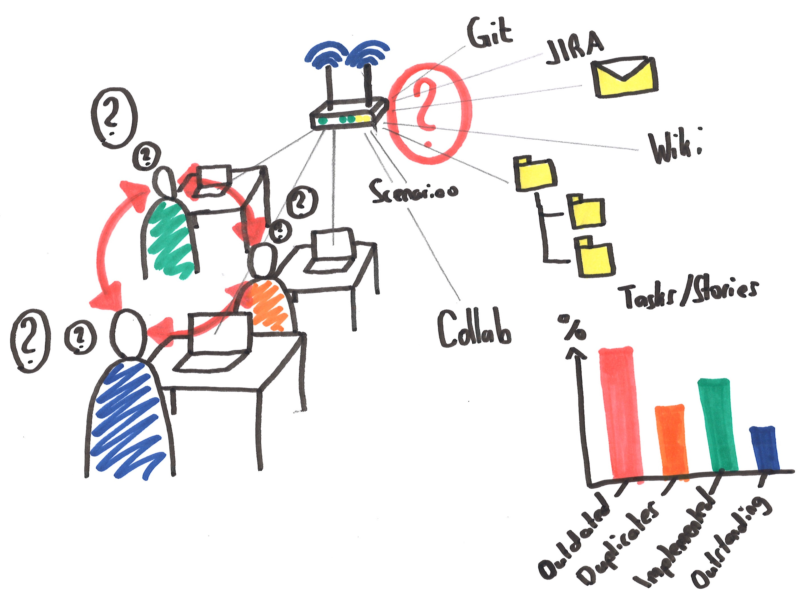
Common problems in projects
Silos
Different sources of information
Redundant and controversial information
Lack of the big picture
Problems are detected late in the process
Documentation out of date
Vision
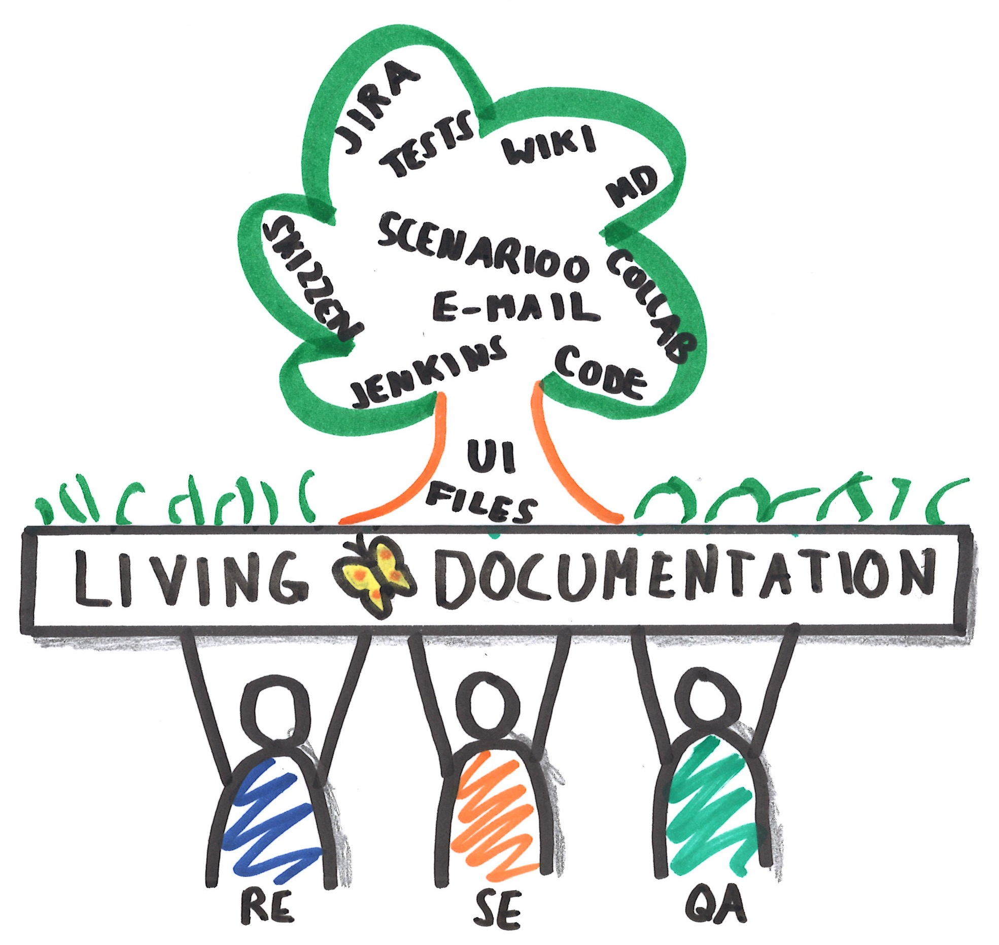
Collaboration of team members in a agile way
Breaking the silos
Improve collaboration
Make BA/RE, Dev and Tester work better together
One model over the hole product life-cycle
Easier to maintain
Solve User Story vs Feature view
Documentation that fits the implementation
Provide example how to create a living documentation of a software project
Provide example of a complete CI tool chain setup
Provide suggestions where which kind of documents are stored
Create a dashboard where all the different artifacts from a project are linked together
Quicker on-boarding for new team members
Specify requirements with examples
Provide example for quick start using specification by example
Provide some good examples of specifications to show the benefits of it
Less misunderstandings
Benefits
Detect problems and challenges earlier
Always have a big picture
See up-to-date requirements and stories only
An overview of the current implementation and test status of each story
One central place where all documents are linked
Versioned
Detect problems and challenges earlier
Spec-by-ex offers a new effective approach to implement projects fast & successfully
Provide example of a workflow how BA/RE, Dev and Tester can work together
Provide some good practices how to run a specification workshop (3 Amigos)
Example Project: Heat Clinic
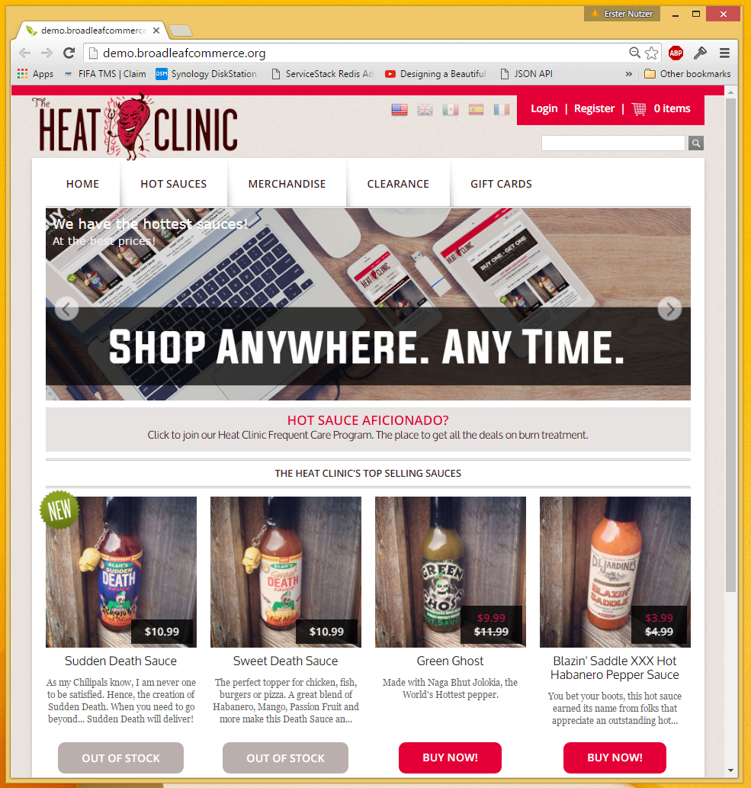
Heat Clinic Activities
User Story Map
Personas
Specification with BDD examples
Automated acceptance tests
UI documentation with Scenarioo
Proof of concept: Generate Markdown
Markdown POC: Generate from directory

Markdown POC: Overview
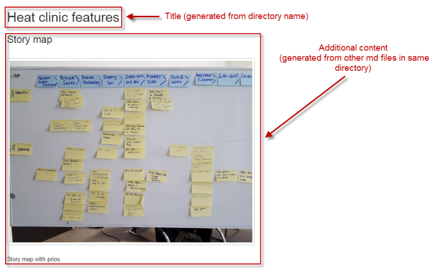
Markdown POC: Features
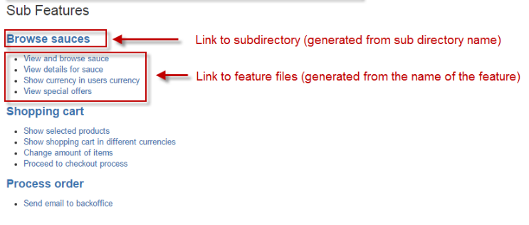
Markdown POC: Feature Details
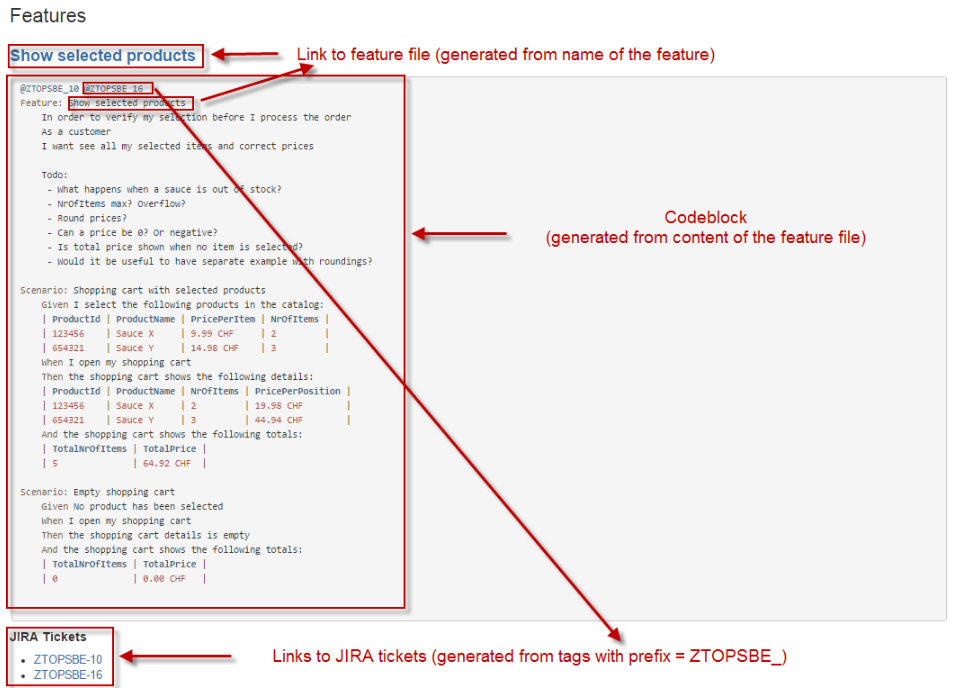
Documentation Viewer
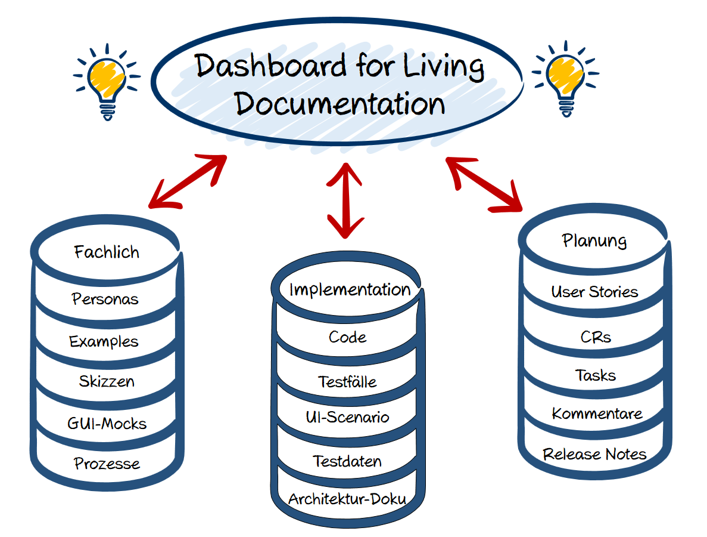
Documentation Viewer: a first UI mock
Central entry point to browse all project related documentation
Several views for different needs
high-order overview
user stories
test results
ui documentation
Powerful search over all sources
Documentation Viewer: "Story Map" View
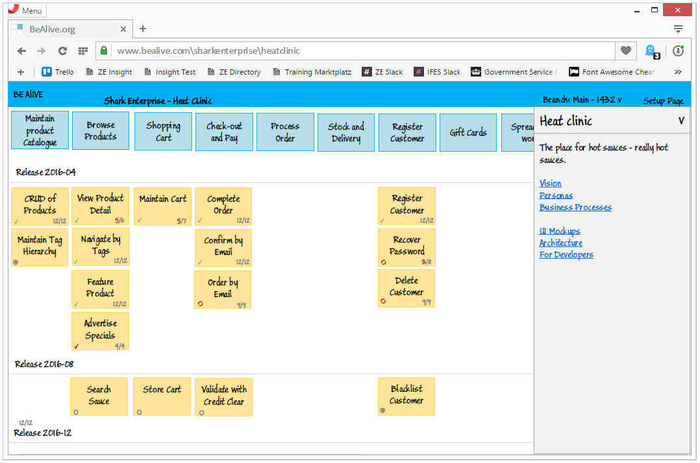
Documentation Viewer: User Story View
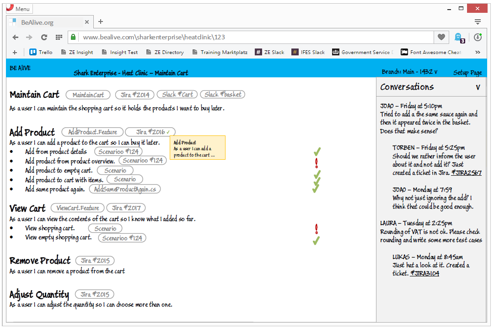
Documentation Viewer: Feature View
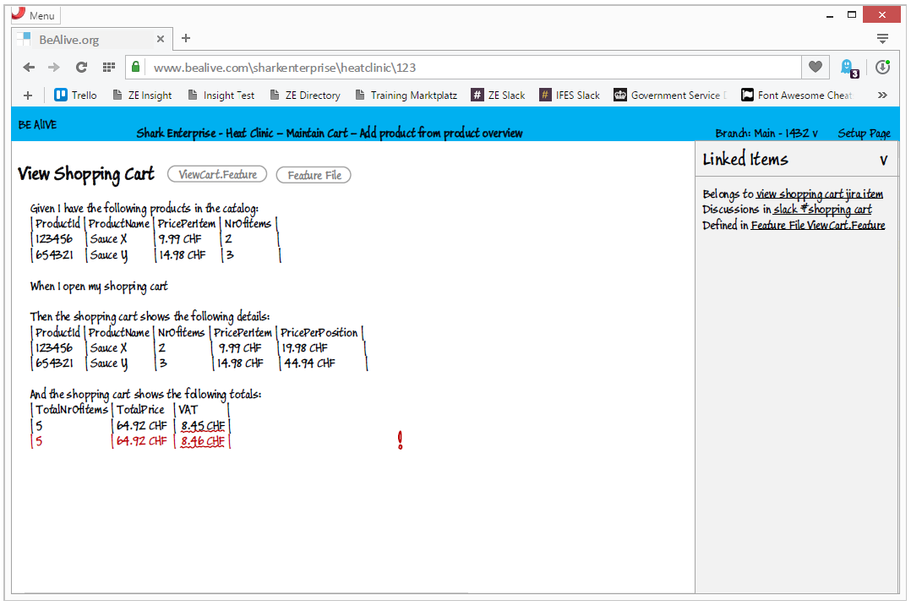
Documentation Viewer: Web Test Screenshots / UI Documentation

GUI Sketch: Personas
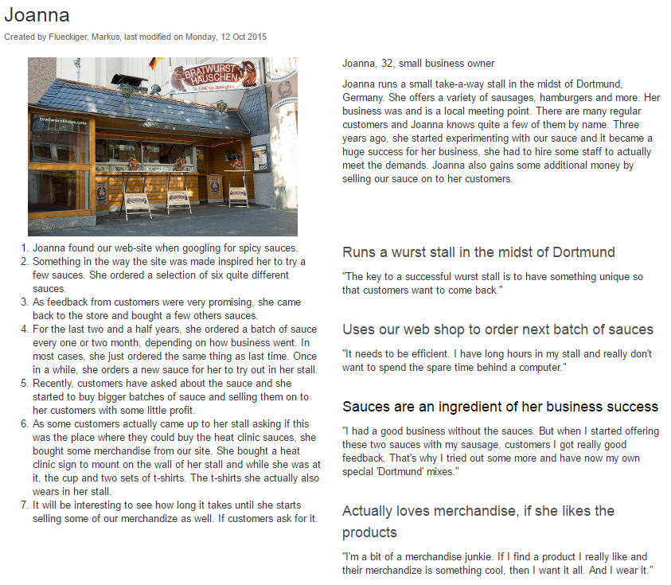
Living documentation sources I
Scrumboard (physical, JIRA, TFS..)
Story map (physical, SpecLog, ...)
Business processes (EA, Visio, Wiki, ..)
Ticket system (JIRA, TFS)
Wiki (Confluence, Github, Sharepoint)
Code
Repository (Github, Bitbucked, TFS)
Living documentation sources II
Build server (TeamCity, Jenkins, Bamboo, TFS)
Deployment server (Octopus deploy)
Test Cases (HP ALM, ...)
End-to-end results (Scenarioo)
Performance, Loadtests (Dynatrace, JMeter, Soapui)
Operation (Tivoli, Splunk, Logfiles, Systemlogs ...)